This is user-stories.md rendered as the built product: the owner who decides what a deliverable is described by, the consultant who produces a Land Quality method statement, the colleague who checks it before it leaves the office, and the client lead reviewer who runs the review and accepts it. Every screenshot is the real application, driven live through the whole cycle on the seeded Wrenfield world — nothing is a mockup, and nothing was staged for the photograph. Where the written story runs ahead of the build, the beat is flagged designed, not yet surfaced and points at its ticket, or at the session that ruled it where the ticket is not yet minted.
Recaptured 2026-08-22 against the e2e substrate (deterministic model providers, seeded corpus).
This page is now the single rendering of the two journeys: the companion decision map
(user-stories-graphic.html) was deleted on 2026-08-18, its accurate content absorbed into the beats and
gap cards below — it had been built from ADRs 0001–0012 and predated the sandbox, binding, internal-QA and
acknowledgement decisions this page is captured against. The second owner-directed walk (2026-08-19 → 22) produced
four rulings which were carried here as gap cards and are now beats: the review period’s owner, the promotion
window, the appointment the named person accepts for themselves, and the review record as one appended table
(T-371–T-375). The drawings that proposed them have been deleted, which is what a mockup is for — the capture is the
record now, and their reasoning lives in the ADR addenda of the same date.
Environmental consultant and lead author at Calder & Hale, the appointed consultancy — and its super-user on this project. Sets the sandbox up, drafts, promotes, answers the review.
Colleague of Eleanor’s at Calder & Hale. Checks her work in the organisation’s own QA round, before anything crosses the wall.
Owner super-user at Trentmoor Energy: defines the project schema, then runs the review group as lead reviewer and holds the accepting code.
EIA Scoping Method Statement — Land Quality, on the Wrenfield–Ashcombe 400kV Connection. Planned, produced, QA’d, reviewed and accepted below.
Nothing in this journey starts with a blank page or an invented filename. The deliverable, its reference, its authors and its reviewers were all settled when the plan was built — the work starts by picking up what the plan already holds.
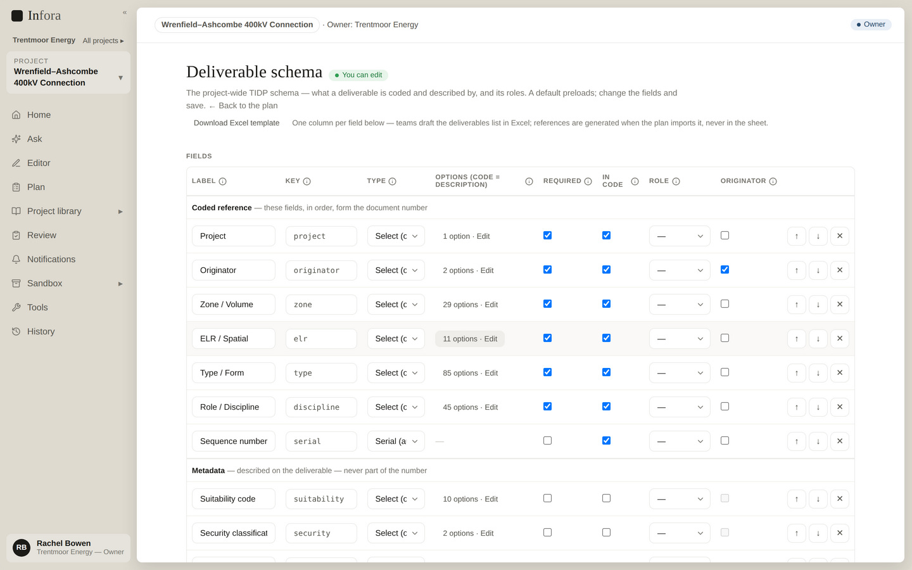
The journey does not open on a deliverable. It opens on Rachel Bowen defining the project’s schema for Trentmoor Energy: which fields make up a document’s coded reference and in what order, which are metadata carried beside it, and which are appointment roles filled per deliverable. Everything downstream — the reference, the plan’s columns, the folder tree, the bind card — reads off this one definition. The schema also exports as a fillable Excel workbook whose header row is the schema’s own attribute fields — the coded and metadata ones, not the appointment roles, because appointments are explicit acts and never a spreadsheet side effect — and which carries no reference column at all: teams draft the deliverables list in a spreadsheet, and the numbering is generated when the plan imports it, never typed in the sheet.
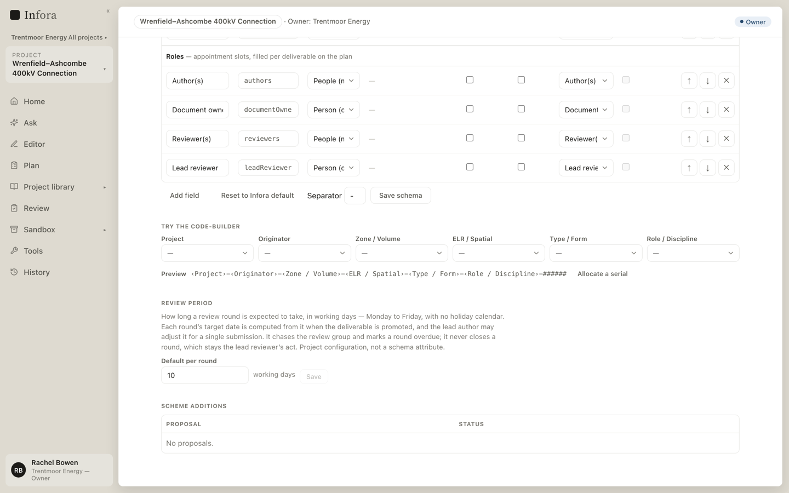
Beside the schema and deliberately not inside it: ten working days, the project’s default review period. ADR-0005 had always given a round “a configurable review period” without saying who configures it, and the cost showed in the build — the status bar rendered a target date and an overdue state off a column nothing ever set. It sits here rather than as a schema field because the schema’s fields are the header row of the deliverables template teams fill in Excel, and a review period would have arrived there as a column nobody should be completing. Working days are Monday to Friday: no holiday calendar is modelled anywhere in the system, and picking one would quietly pick a jurisdiction.
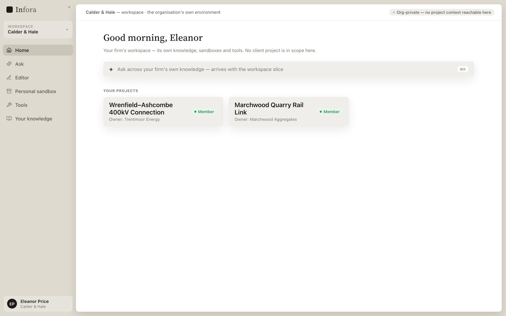
Eleanor Price signs in at Calder & Hale and lands on her workspace: the Wrenfield–Ashcombe 400kV Connection, owned by Trentmoor Energy. Three organisations work this project; everything that follows happens inside it, and the wall decides what each of them sees.
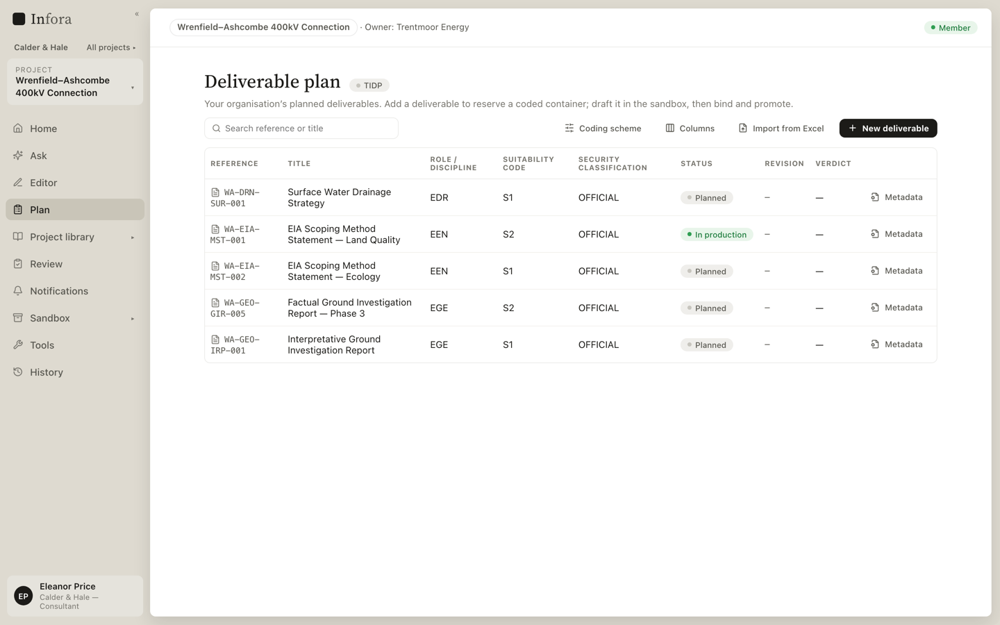
WA-EIA-MST-001 — EIA Scoping Method Statement, Land Quality. The reference came from the project’s naming rules the moment the row was created, and the reviewers were named on it. Eleanor did not invent a name and does not decide who reviews her work; that was settled in the plan. The columns beside the title — discipline, suitability, security classification — are Calder & Hale’s organisation standard, set once by its super user for every member: there are no personal column layouts to drift apart.
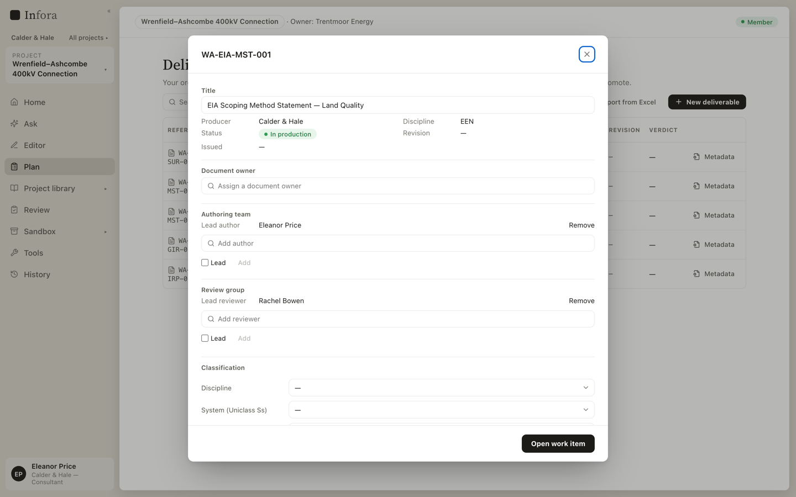
Producer, discipline, revision state, the authoring team, the review group. Rachel Bowen is the confirmed lead reviewer, and access follows that confirmation — a proposal on its own confers nothing. Eleanor sees the full editing set here because she is Calder & Hale’s super user on this project, withdrawal and lead-author reassignment included. The narrower right this card also carries is the one the walkthrough session added: a row’s live lead author, super user or not, may edit the title, the classification and the authoring team, and may propose reviewers — never confirm them, never reassign the lead, never touch the coded reference.
Working drafts live in the producing organisation’s private sandbox. They never leak into anyone’s answers, and the v0.x working series never leaves — what the other organisations eventually see is a frozen, promoted revision.
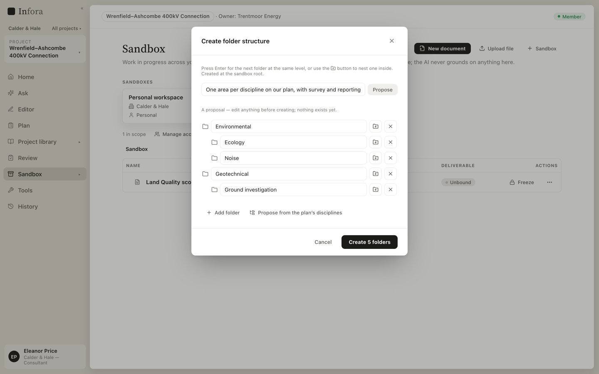
Before anyone drafts, the sandbox needs a shape. Eleanor describes the one she wants and an assistant fills the builder with a candidate tree — or, with no model call at all, she seeds it from the disciplines already on her organisation’s plan. Either way nothing has been created: the proposal lands in an editable builder and only the confirm button writes. That split is structural rather than polite — there is no apply endpoint for the assistant to call, so the only writer is the deterministic one.
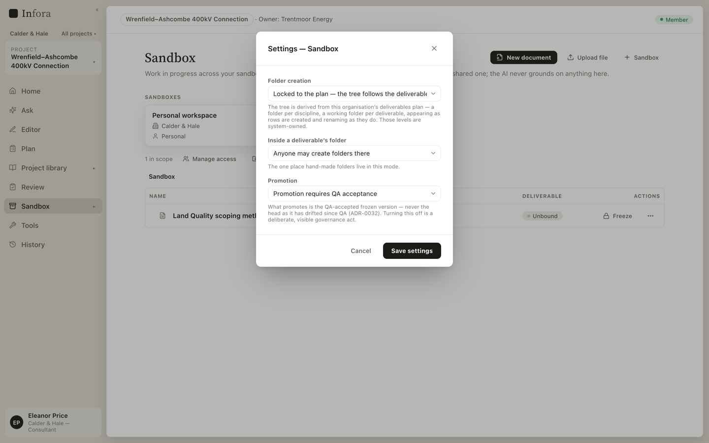
Who may create folders, whether that still holds inside a deliverable’s own folder, and whether promotion demands QA acceptance first. These are per-sandbox settings a super user sets deliberately, not preferences that drift: the third one is a governance gate, and turning it off is a visible act with a name attached.
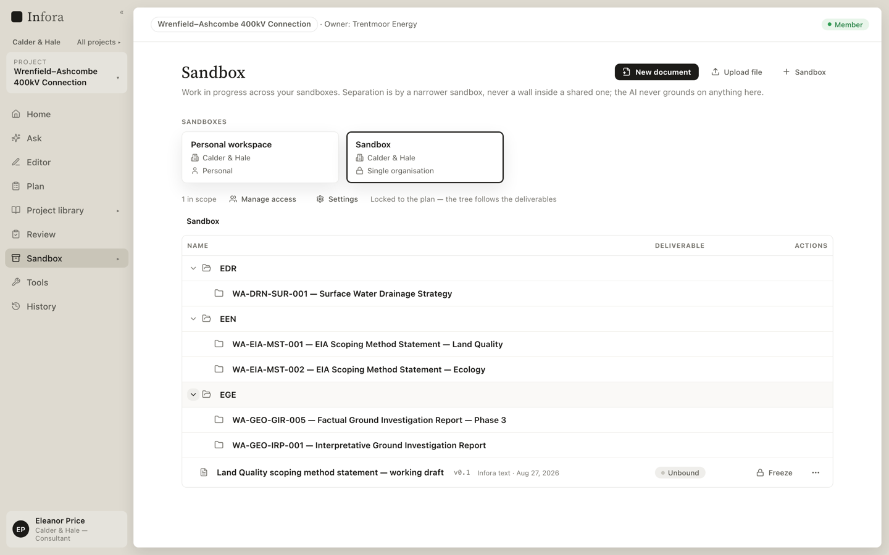
In plan-locked mode nobody names folders at all: a folder per discipline, a working folder per deliverable, derived from Calder & Hale’s own plan rows and appearing as rows are created. A retitled row renames its folder. A withdrawn row keeps its folder, badged off-plan — nothing is deleted and no work is orphaned, which is the same never-delete instinct that keeps the coded reference immutable. One open question rides this mode: in a sandbox shared across organisations, folder names derived from the whole plan would disclose the shape of the TIDP to everyone granted access. Raised, not yet settled (Q-039).
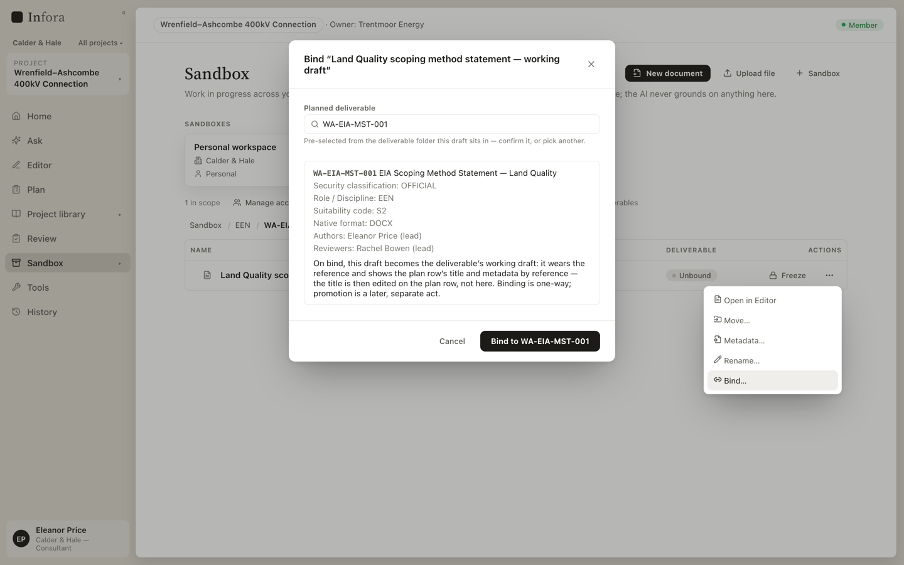
The draft sits in WA-EIA-MST-001’s folder, so that deliverable arrives pre-selected — pre-selected, not silently bound. The card shows exactly what the draft is about to wear: the coded reference, the plan row’s title, its schema metadata, the appointments already made on it, and the consequence stated in a sentence before Eleanor commits to it. Binding is one-way.
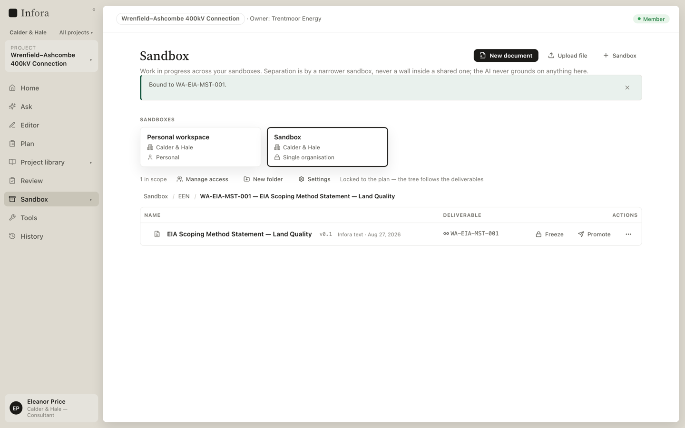
The working title is now dormant: the bound draft displays its plan row’s title and metadata by reference, so retitling on the plan retitles the draft and the two can never disagree. The rename control has simply gone from the row’s menu — there is nothing to rename here any more, and the API refuses it too, pointing at the plan row where the title actually lives. The container has been waiting for this document since the plan was built, so promotion later carries no retyping.
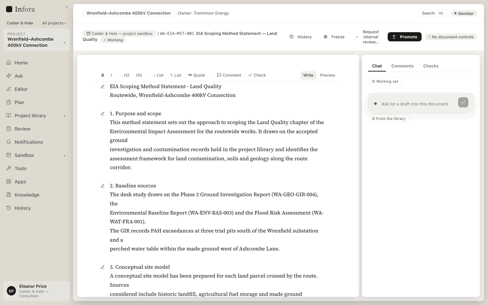
The draft in the Editor, the drafting assistant alongside. Its reach is the project library — the curated set of accepted material the owner trusts — so the text it helps produce is anchored to the project’s real positions, not to whatever half-finished files are lying around.
Internal QA used to be optional ceremony. It is now what this team has decided its work goes through: the gate is on by default for a project sandbox, and with it on, promotion has exactly one legal source — the version internal QA accepted. Read against the ISO 19650 common-data-environment states, this act is Content Check and Approve for Sharing, and it all happens inside Calder & Hale. Nothing here crosses the wall.
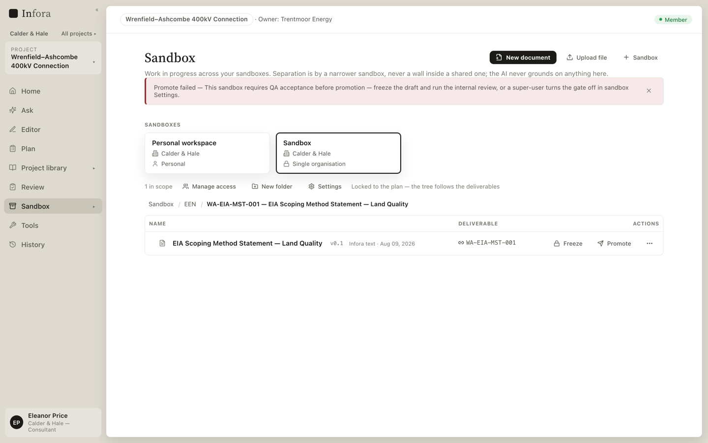
Promote opens a window rather than firing an act, and the window has already asked the server what this click would do. The answer here is a refusal: this sandbox requires internal QA acceptance before anything is promoted, so the source is not legal and Promote is disabled with the reason stated beside it. The gate is a recorded choice rather than a rule of the product — a team turns it off deliberately, and the deliverable below that skips QA does exactly that.
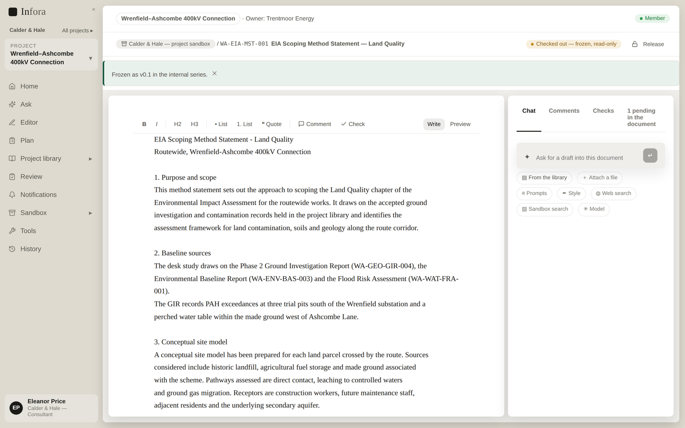
Freezing snapshots the working head into Calder & Hale’s own org-private container and locks it: v0.1 in the internal series, and the thing being checked cannot drift while it is being checked. Nobody outside the organisation can see any of this — that container is org-private by scope, not by a filter on the way out. Once the internal reviewer is in place, a second freeze issues the internal revision and opens the round on it.
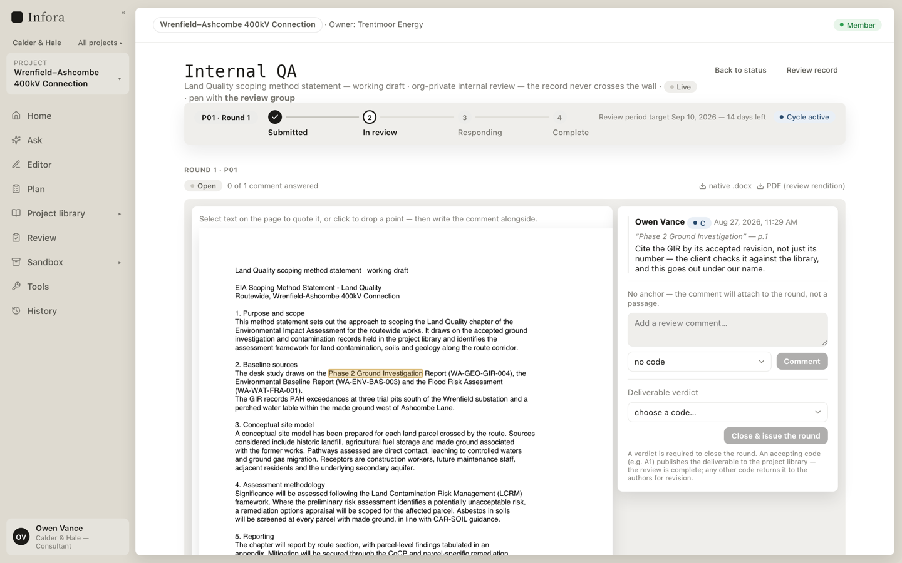
Owen Vance checks his colleague’s work on exactly the screen the client’s reviewers will use later: the same anchored comments on the same rendered PDF, the same coded scheme, the same record. The page states what it is — an org-private internal review whose record never crosses the wall — and it carries no coded reference, because an internal check is not a revision of anything the project has seen.
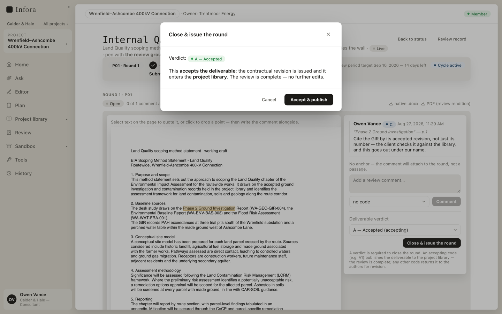
Owen closes the round with a verdict. Accept, and the frozen version becomes what may be promoted; ask for revision, and it goes back to the authors — who can answer, because the internal container carries the plan row’s authors as well as its reviewers. One thing visible in this shot is wrong, and is left in rather than cropped out: the modal still speaks the project review’s language, promising that the code “enters the project library”. Nothing of the sort happens here — an internal acceptance only unlocks promotion. The mechanism is right for an org-private round; that sentence is not.
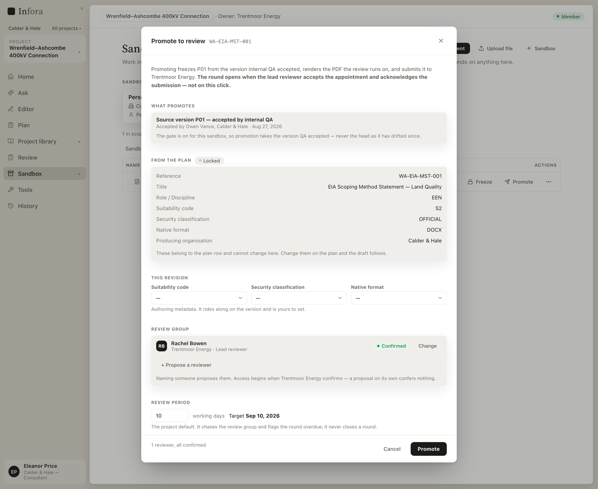
ADR-0008 made promotion a near-empty hand-off on purpose, because a form filled in the moment is a form filled wrong. This window survives that objection by splitting the fields rather than by tone. What promotes is named and read-only — the version internal QA accepted, and who accepted it, because the whole point of the gate is that the client receives the version that was checked. The plan-owned identity is shown and locked, so a thoughtless confirm produces exactly the plan’s state. Only what is already Eleanor’s to set takes input: the authoring metadata, the review group with its lead, and the review period. From the producing side every reviewer control writes a proposal — naming someone in another organisation proposes them and nothing more, because confirmation stays owner-side (an owner-side naming confirms outright, as owner grants always have), and that is why a producing organisation cannot open the wall from this window. Changing the lead reviewer is one act, not a remove-then-name pair — the swap either happens whole or not at all, and the window states the wait it buys before the click commits it. It reopens at every promotion, which earns its place at round two more than round one: six months and a staffing change later, the alternative is silently inheriting a review group named at planning and never looked at since.
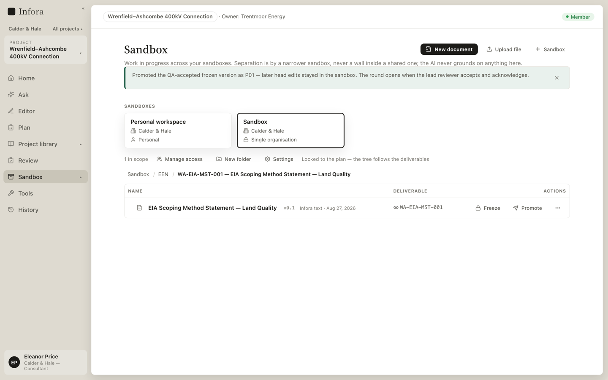
Promotion succeeds now, and says which of the two legal sources it took: the QA-accepted frozen version, not the head as it has drifted since. That distinction is the whole point of the gate — the client receives the version that was checked. One acceptance buys exactly one revision, so version two below runs its own internal pass rather than quietly re-issuing the same content under a new number.
Promotion freezes an immutable P-revision, generates the PDF that will be reviewed, keeps the native file in the same container, and opens the round. From that moment the review belongs to the review group — and the authoring side sees none of it until the lead issues.
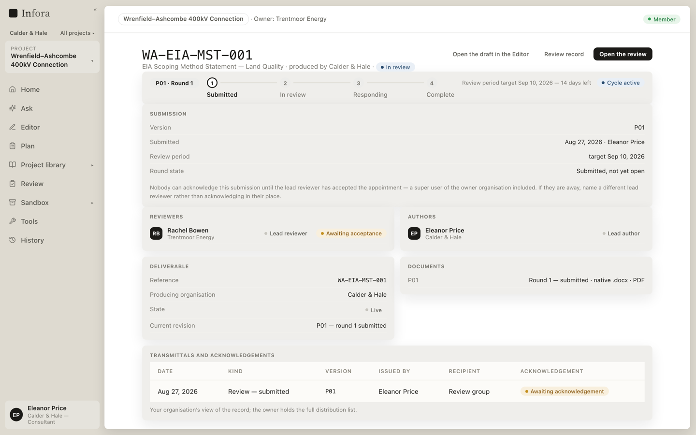
The submission, from the producing side: Infora froze P01 out of the window above, rendered the review PDF beside the native file, and sent round 1 to Trentmoor. The four-state bar says exactly where the deliverable stands — submitted, and not yet in review, because the round does not open on the promoter’s click. It opens when the lead reviewer accepts the appointment and acknowledges the submission — or, with the lead away, when a Trentmoor super user acknowledges in their stead — which is the next two beats and neither of them is Eleanor’s to make.
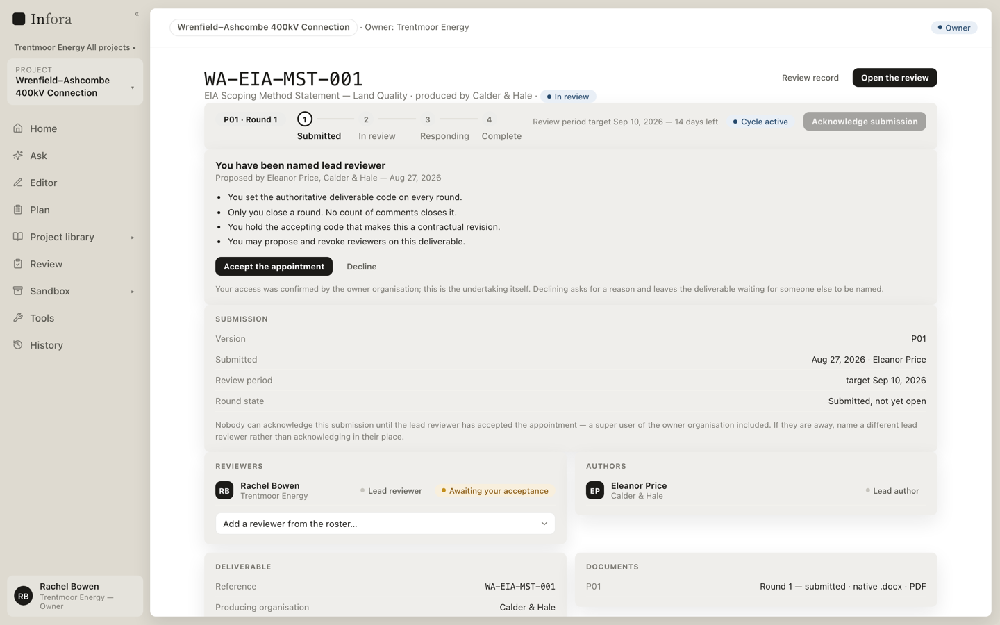
Appointment used to be something two organisations did about a person: Calder & Hale proposed Rachel, Trentmoor confirmed her, and nowhere in the model did Rachel say anything at all. But a lead reviewer holds the deliverable’s contractual verdict, and nobody can give that undertaking on someone else’s behalf. So the card states the duty in four lines — the code on every round, the close that only she can make, the accepting code, the review group — and asks. Nothing about tables or grants: a professional undertaking should be readable by the person giving it. Until she accepts, the Acknowledge button above is disabled for everyone, a Trentmoor super user included, because the override covers the receipt and never the undertaking. Nobody told her: notifications are deferred, so she finds this by opening the deliverable, and the submission simply waits longer.
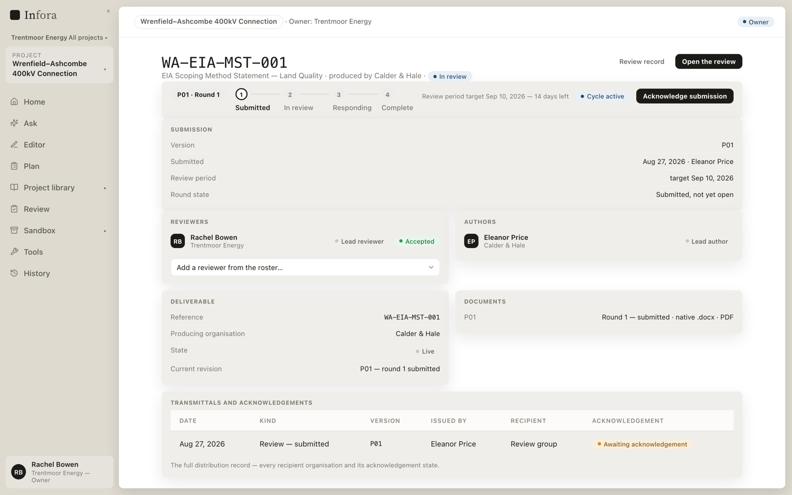
Rachel was named lead reviewer in the plan and has accepted the appointment, so the submission is hers to receive. Acknowledging it opens the round for the review group — a recorded receipt with a name on it, not a formality. Who may fire it is narrower than the shot suggests, and deliberately so: the act belongs to the lead reviewer alone, or to a super user of the owner organisation when the lead is away. It was briefly wider — an addendum of 2026-08-06 extended it from the owner organisation to any live confirmed reviewer, because gating on the owner alone would park a round behind a firm with no stake in its pace — and the narrowing of 2026-08-22 answers that reasoning rather than discarding it: it does not gate on the owner organisation either, but on the lead reviewer, who may sit outside it and who fires the receipt in the ordinary case. What went is a non-lead reviewer signing for a submission they do not run. The override covers the receipt and never the undertaking: until a lead has accepted, nobody may acknowledge at all, the super user included, and their move in the face of an absent lead is to re-appoint.
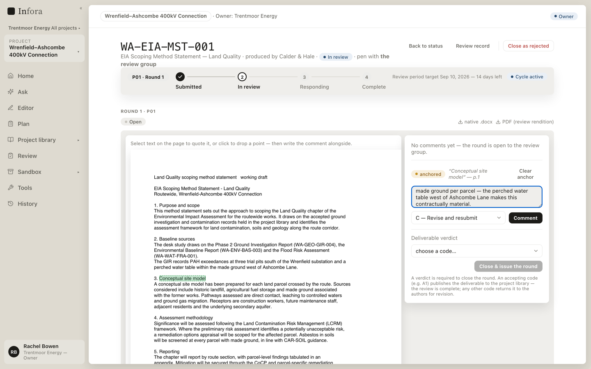
Rachel selects the text she means on the P01 PDF and writes the comment alongside, coded on the project’s acceptance scheme. The anchor — page, quote, quads — is stored on the comment itself, bound to the immutable version, never a sidecar file.
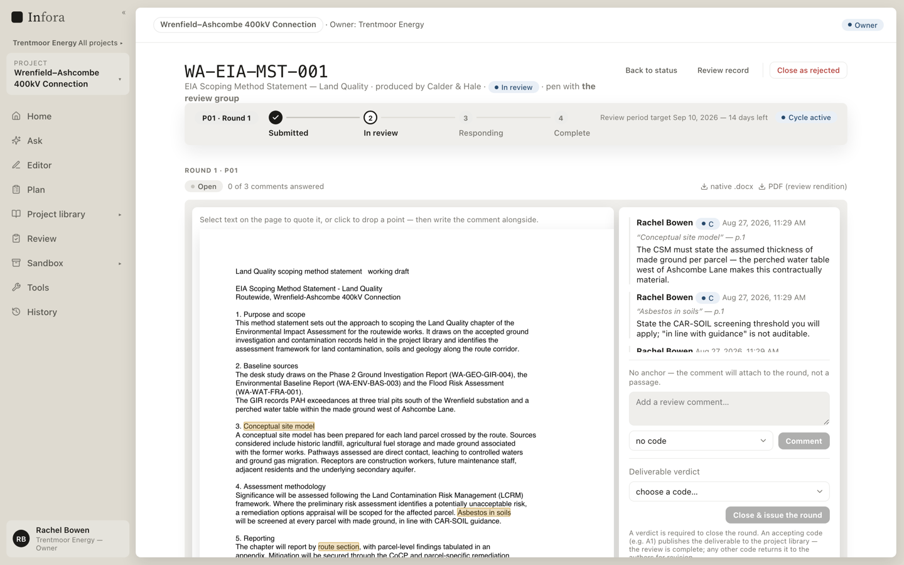
Three comments, each pinned to the exact place it refers to, each coded, all landing in one record the whole review group sees as it is written — across organisations. Nobody is assembling a spreadsheet, and nobody is guessing what “page three, paragraph four” refers to. The openness is bounded rather than general: it runs to the appointed review group and stops at its edge — open across organisations inside the group, invisible to the project outside it.
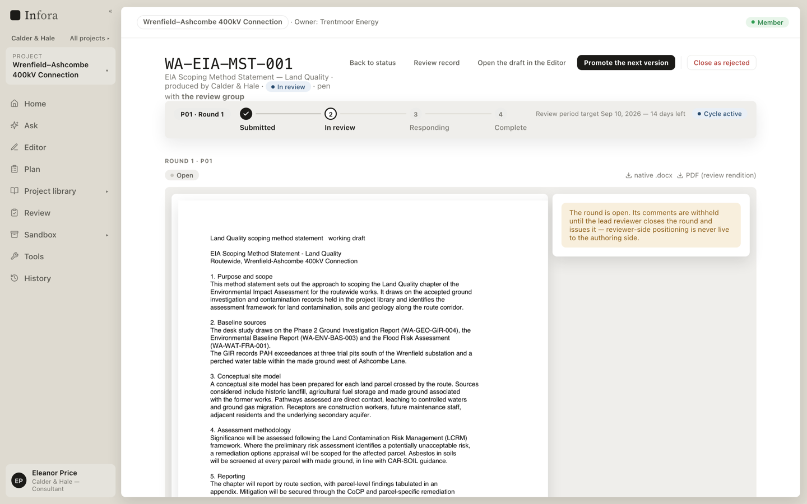
While the round is open, Eleanor sees the round exists and nothing of its content. The open round’s comments are reviewer-side state, withheld until the lead issues — enforced in the server’s read, not by the client hiding fields. What she is blind to is exactly one round, and that is a guarantee rather than a coincidence: a deliverable carries one controlled revision in flight at a time, so only one round is ever open, and every round but this one stays permanently readable to her. Writing alternates with it — while the round is open only reviewers may write, and the pen crosses back at the transmittal.
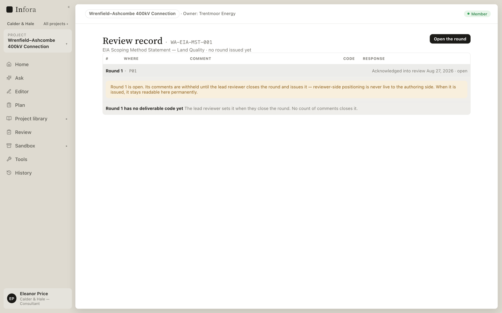
The same review record Rachel is writing into, opened by Eleanor. Round one is present as a band — the round is not hidden, and its existence was never the secret — but it has no rows, and the notice says content exists and why it is out of reach. That is the house rule rather than a stylistic choice: greying the rows out would leak how many there are, and rendering an empty round would say something false, because silence reads as absence and absence is a different fact from “not yours yet”. Even the header counts only what Eleanor can actually read. The withholding is applied in the server’s read, so no client can undo it.
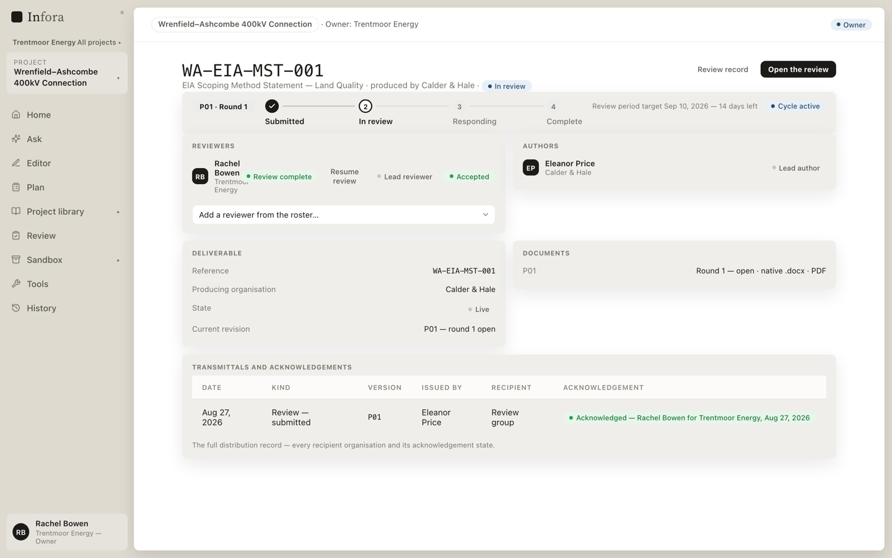
“Review complete” is a stored, round-scoped signal — a reviewer with nothing to say is done, not absent. The set freezes when the round issues, and no count of completions closes anything: closing stays the lead’s human act.
Closing the round is a verdict, not a timeout. The record is issued to the consultant, and version two cannot leave until every comment carries a response — a change declared in the next revision, or an explicit no-change with a reason. There is no third state.
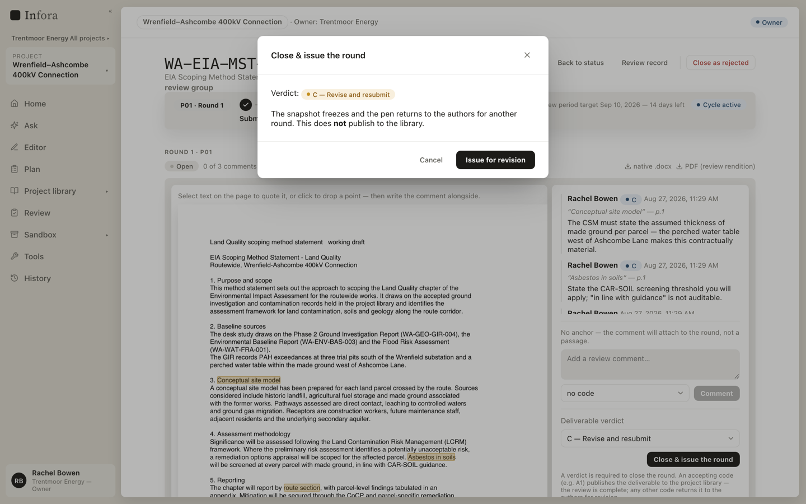
Rachel sets the deliverable verdict — C, revise and resubmit — and closes the round. The review snapshot freezes on the record, the transmittal issues it to the authoring side, and only now does Calder & Hale see the comments. Nothing is sent anywhere: the transmittal is an event record — who issued which version to whom, and when — and no file moves on the platform, because both organisations were always reading the one record.
For each comment Eleanor writes a response and declares the revised passage that answers it. The version that passage lands in does not exist yet — promotion is gated on the responses — so the link is declared now and the system stamps the version id when promotion creates it. Nor is this Eleanor’s alone: the pen passes to the authoring side the plan named, lead author and authors together, so several of Calder & Hale can work the returned comments at once.
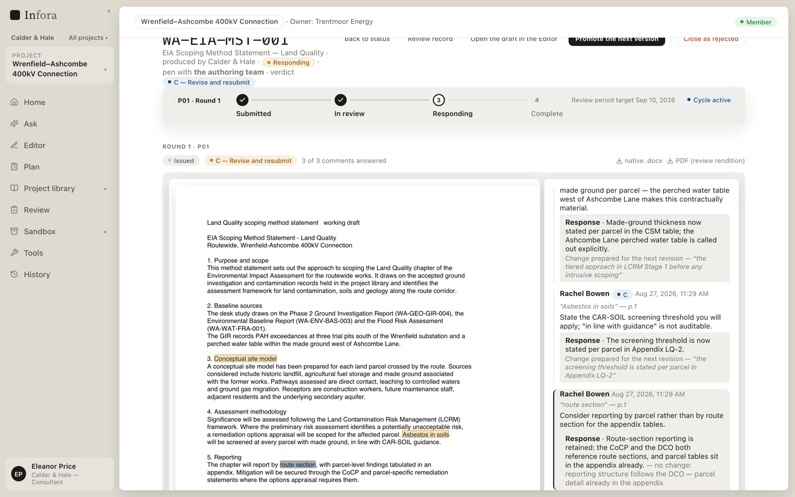
Two changes declared, one explicit no-change with its reason on the record — the route-section point is reconciled by hand, not merged silently. Promote refuses while any comment is unanswered; the mandatory-response rule bites the transmittal back, not a dialog. The rule pays twice over: every comment now leaves the round paired with the response that resolved it, and that pairing — not the prose either side wrote — is the comment-to-resolution material the moat distils.
An accepting code is the contractual act: the work item closes, the accepted revision becomes the controlled record, and the deliverable passes into the project library — from now on it is part of what the project treats as true, and retrieval grounds on it.
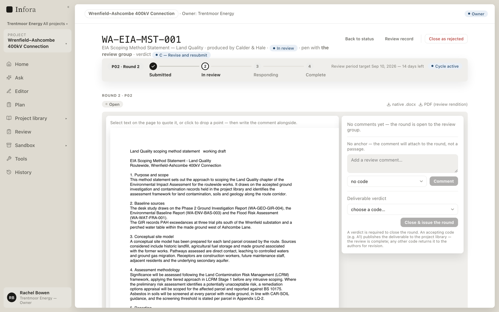
Version two arrives and the working screen stays on the round under review: round 2, freshly acknowledged, no comments yet — the reconciliation Rachel will read sits in the record one click away, which is the next beat. P02 took the same road as the first version, through its own internal QA pass, because one QA acceptance buys exactly one revision; and round 2 opened the way every round now opens, on acceptance and acknowledgement, not on the promoter’s click.
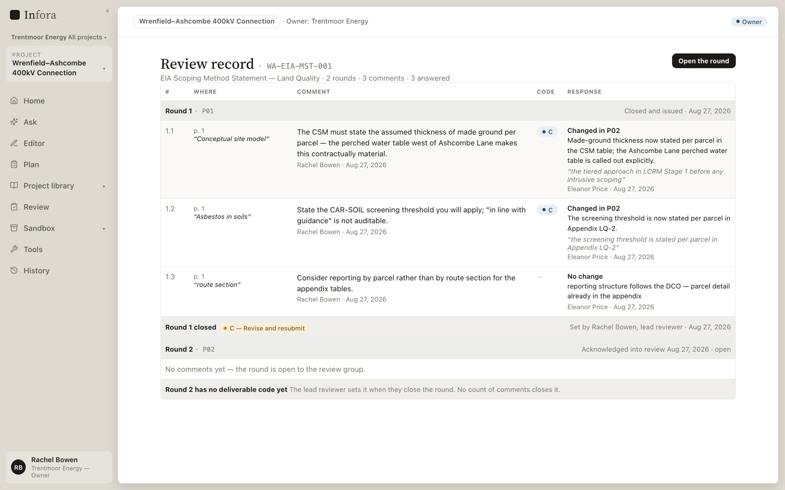
The chapter’s whole review history in one scroll: every comment in order with where it sits, its code, its author and the response that answered it, round one closed off by the deliverable code it concluded with, round two appended to the same table rather than opening a new one. This is what the Excel review notice could never do, and the reason ADR-0009 refused to materialise a second artifact from the record. Each answered comment’s response either points at the change — “Changed in P02”, with the passage — or states explicitly that none was made and why; a response written before its promotion reads “change prepared for the next revision” until the stamp lands (ADR-0004’s declare-now, stamp-later). Round two carries a band saying it has no code yet, because an open round with no verdict is a state rather than a gap, and no count of comments will ever fill it. There is no download, no “issue the record”, no print button anywhere on this screen: the DRN was dropped and a button here would quietly reinstate it.
The chapter meets the standard the client is paying for. The modal says exactly what the accepting code does before Rachel commits it: the contractual revision is issued, the deliverable enters the project library, the review is complete — no further edits.
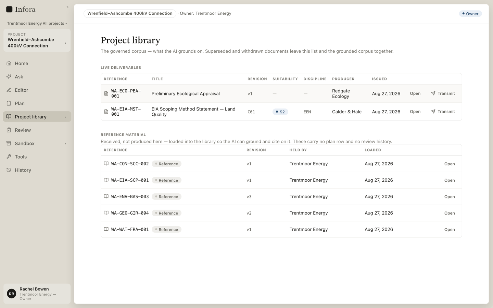
WA-EIA-MST-001, revision C01, live in the project library. It is now project knowledge: the drafting assistant grounds on it, citations resolve into it, and the wall still decides who reaches it. The ground investigation and baseline reports it was drafted from are on the same page and in a different table — Reference material, received rather than produced here. Both ground and both are cited the same way; only one of them is this project’s record of its own work, and listing them together would let a corpus quietly launder itself into the record it exists to support.
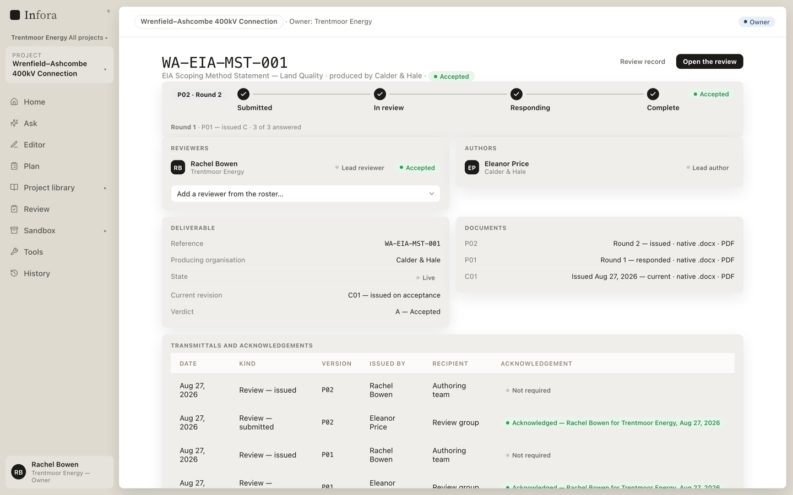
Submitted, in review, responding, complete. The work item is closed and the cycle ran to acceptance without a review spreadsheet, a chased document controller or an emailed comment sheet anywhere in it.